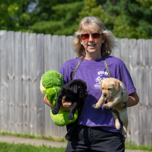

Video
My Background
Throughout my career, I have worked with a plethora of different clients with specifically tailored audio-visual needs. Ranging from non-profits, educational institutions, and more, my diverse set of experiences allow me to provide intricate forethought, careful production, and adaptable post-production and distribution skills to the table.
Director of the Film Team at the Dynamic Sustainability Lab
As the in-house videographer at the Syracuse University Maxwell School’s Dynamic Sustainability Lab, I develop, produce, and distribute all the Lab’s audio-visual work. See my sample video work above and watch more on our YouTube page: The Dynamic Sustainability Lab.
Director of Communications at Circle Tail
As the Director of Communications for Circle Tail, I developed, produced, and distributed all of Circle Tail’s audio-visual work. See my sample video work above and visit our social media page for more information: Circle Tail Instagram (@circletailinc).
Your Good Name and Your Family
For my Senior Capstone and Honor’s Thesis project, I am developing a documentary piece titled Your Good Name and Your Family. This piece details the life of my Great Uncle, who fought and was killed in WWII. Stay tuned to watch the trailer in January 2026 and the final project in May 2026!